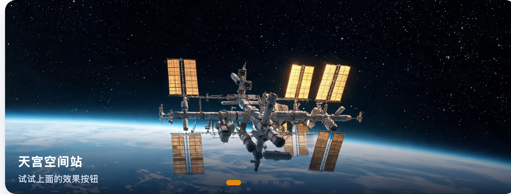
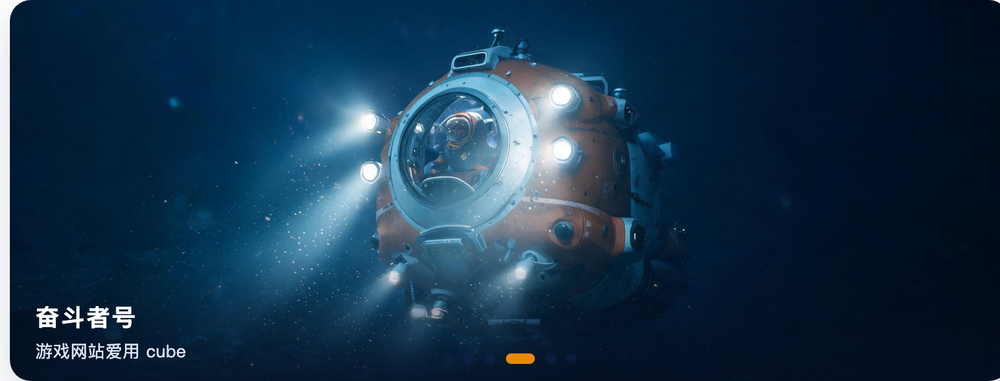
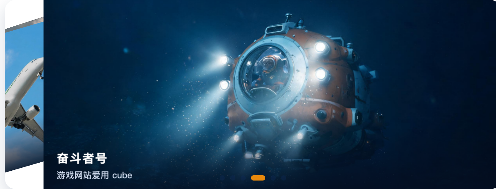
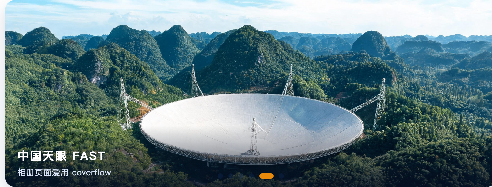

一
任务一 · 提示词工程师：让 AI 听懂需求⭐⭐ 需求拆解 → 提示词精确性 → AI 输出验证
第 1 轮 · 我的提示词
学生 → AI口语版
帮我用 Swiper 写一个轮播，容器是 #wySw4。
要求：能循环、自动播放 3 秒、下面有分页圆点、初始效果用 cube。
第 1 轮 · AI 回答
AI → 学生四处不合需求
new Swiper('#wySw4', {
loop: true,
autoplay: { delay: 3000 },
pagination: { el: '.swiper-pagination' },
effect: 'cube'
});
第 2 轮 · 我的提示词
学生 → AI指出漏项
刚才的代码还有一个需求没实现：用户手动滑动或者点击分页器后，自动轮播不能停止，要继续按 3.2 秒循环播放。
请在现有配置基础上补全，并且再次确认全部 4 项需求都满足：1. 无缝循环 loop；2. 自动翻页 delay 3200ms；3. 分页器 clickable 可点击；4. 初始效果是 cube 立方体。
同时告诉我用哪个参数保证手动后自动播放不停止。
第 2 轮 · AI 回答
AI → 学生补上 ② 的"手动后不停"
new Swiper('#wySw4', {
loop: true, // ① 无缝循环
effect: 'cube', // ④ 初始 cube
speed: 800, // 切换动画时长
autoplay: {
delay: 3200, // ② 每 3.2 秒翻一页
disableOnInteraction: false // ★ 手动后不停，默认是 true
},
pagination: {
el: '#wyPag4', // ③ 精确绑定
clickable: true // ③ 圆点可点
}
});
关键：autoplay.disableOnInteraction 默认是 true，不显式改成 false 的话，拖一下或点一下圆点，自动播放就永久停了。
第 3 轮 · 我的提示词
学生 → AI追问边界情况
前两轮已经实现了 loop、3.2 秒自动播放、可点击分页器、cube 效果，但我担心还有几个边界问题没处理：
1. 要保证页面 DOM 完全加载后再初始化 Swiper，避免拿不到元素；
2. 自动播放不能在最后一张停止，要一直循环；
3. 手动点击分页器或滑动后，自动播放要重新从 3.2 秒开始计时，不能乱序；
4. cube 效果要写清楚必要的 HTML 结构和基础 CSS，避免效果不显示；
5. 请帮我检查 loop 模式下分页器点击是否正常，并给出逐项测试步骤。
请在之前代码基础上完善，标注新增了哪些配置、分别解决什么问题。
第 3 轮 · AI 回答 · JS
AI → 学生最终采用 · 已并入演示四
// 新增 ①：等 DOM 与样式就绪再初始化，否则拿不到宽高
document.addEventListener('DOMContentLoaded', function () {
var xzr_swiper4 = new Swiper('#wySw4', {
loop: true,
effect: 'cube',
slidesPerView: 1, // 新增：cube 只支持单张
speed: 800,
autoplay: {
delay: 3200,
disableOnInteraction: false,
stopOnLastSlide: false, // 新增：不停在最后一张
pauseOnMouseEnter: false // 新增：悬停不暂停
},
pagination: { el: '#wyPag4', clickable: true }
});
// 新增：点圆点后计时器清零，重新数满 3.2 秒
document.querySelector('#wyPag4').addEventListener('click', function () {
xzr_swiper4.autoplay.stop();
xzr_swiper4.autoplay.start();
});
// 新增：拖动结束后同样重置，节奏不乱序
xzr_swiper4.on('touchEnd', function () {
xzr_swiper4.autoplay.stop();
xzr_swiper4.autoplay.start();
});
});
第 3 轮 · AI 回答 · HTML 与 CSS
cube 必需的三层结构 + 基础样式缺一项就只看到平移
<div class="swiper" id="wySw4">
<div class="swiper-wrapper">
<div class="swiper-slide"><img src="swiper-imgs/tiangong_1.jpg" alt=""></div>
<!-- 其余 slide 同理 -->
</div>
<div class="swiper-pagination" id="wyPag4"></div>
</div>
<style>
#wySw4 { width:100%; height:290px; overflow:hidden } /* 必须有明确高度 */
#wySw4 .swiper-slide { height:100%; backface-visibility:hidden } /* 背面不穿帮 */
#wySw4 .swiper-slide img { width:100%; height:100%; object-fit:cover; display:block }
</style>
逐项验证 · 截图 + 一句话结论
① 无缝循环 loop: true

最后一张之后继续翻 → 回到第一张「天宫空间站」
结论：最后一张继续往后拖，直接回到第 1 张，中间没有空白断档。
② 3.2 秒自动翻页 + 手动后不停
手动切换后静置 3.2 秒 → 自动翻到下一张「爱达·魔都号」
结论：静置约 3.2 秒翻一次；拖动松手后仍继续自动翻页。
③ 圆点分页器可点击 clickable: true

点第 4 个圆点 → 立即跳到第 4 张「奋斗者号」
结论：点第 4 个圆点立刻跳转，其它轮播的圆点没有被串。
④ 初始效果为 cube effect: 'cube'
cube 效果下翻页的中间帧 · 两个画面以透视角度同时可见
结论：cube 效果下翻页是 3D 立方体翻转，800ms 过渡完整不闪跳。
二
任务二 · creative 仿写：课堂没讲，AI 教你⭐⭐⭐ 官方示例 257-effect-creative.html → creativeEffect
我的电影墙参数
creativeEffect 配置prev 缩小左移倾斜 · next 放大右移进场
var xzr_creative = {
limitProgress: 2, // 左右各 2 张参与变换，形成墙的纵深
prev: { // 上一张：缩小 + 左移 + 倾斜退场
translate: ['-58%', 0, -260],
rotate: [0, 0, -18], // 改 -20 即左倾 20 度
scale: 0.82,
opacity: 0.72, // 压暗，退为背景
shadow: { translate: [0, 0, -320], opacity: 0.6 }
},
next: { // 下一张：放大 + 右移进场
translate: ['72%', 0, -120],
rotate: [0, 0, 10], // 右倾，与左侧对称
scale: 1.12,
opacity: 1,
shadow: { translate: [0, 0, -200], opacity: 0.5 }
}
};
// 创建：effect: 'creative' 时挂 creativeEffect；speed 调 900ms 更顺滑
运行截图 · 第 7 个按钮「creative 电影墙」

点「creative 电影墙」后的切换中间帧：上一张侧倾缩小退场，下一张放大右移进场
我的理解：prev 控"已经退场的那张"——缩小、左移、带角度退到侧后方；next 控"即将进场的那张"——从右侧放大推入；当前这张永远居中不动。
三
任务三 · 综合创作 + 技术答辩：超纲加分项⭐⭐⭐ 第六件展品 + 一个课堂没讲过的 Swiper 能力
第六件展品 · slide 结构
swiper-task.html · 四个演示台第 6 张AI 生成配图 · 16:9
<div class="swiper-slide">
<img src="swiper-imgs/adora_1.jpg" alt="爱达·魔都号">
<div class="wy-cap">
<h3>爱达·魔都号</h3>
<p>首艘国产大型邮轮 · 2024 年 1 月商业首航</p>
</div>
</div>
配图由 AI 生成，横版 16:9，与其余五张比例统一；四个演示台都已补到第 6 张。
超纲能力 · keyboard 键盘控制
createSwiper4 公共配置← → 切换，仅在视口内响应
var xzr_cfg = {
loop: true,
effect: fx,
speed: 800,
autoplay: { delay: 3200, disableOnInteraction: false },
pagination: { el: '#wyPag4', clickable: true },
keyboard: { enabled: true, onlyInViewport: true } // 键盘 ← → 翻页
};
if (fx === 'creative') { xzr_cfg.creativeEffect = xzr_creative; }
return new Swiper('#wySw4', xzr_cfg);
运行截图
第六件展品 · 爱达·魔都号
第 6 张 slide 完整显示：配图 + 标题 + 说明
键盘 ← → 翻页

按下 ← / → 方向键后，从第 4 张切到第 5 张「中国天眼」